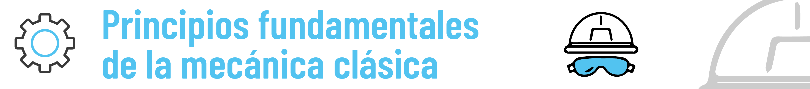

Información General del Proyecto
Ciclo Educativo: V
Grado(s): 10° y 11°
Áreas STEAM Integradas

Áreas Transversales: Lenguaje, Ciencias Sociales.
Idea Central del Proyecto
Aplicar los principios fundamentales de la mecánica clásica para identificar, analizar, modelar y proponer soluciones optimizadas a problemas concretos de movilidad, seguridad o eficiencia en el entorno comunitario, fomentando una comprensión profunda de cómo la física gobierna el mundo que nos rodea y cómo podemos usarla para el bien común.
Problema o Desafío del Contexto a Abordar
Los estudiantes, mediante un proceso de indagación y observación, identificarán y delimitarán un problema o desafío específico en su comunidad relacionado con la mecánica clásica.
- Seguridad Vial: Análisis de un cruce peatonal peligroso (tiempos de semáforo, velocidad de vehículos, visibilidad), proponiendo mejoras basadas en cálculos de distancias de frenado, tiempos de cruce.
- Accesibilidad: Diseño o mejora de rampas de acceso (ángulo óptimo, fuerzas involucradas, materiales).
- Eficiencia Energética en Movimiento: Análisis del diseño de vehículos de transporte escolar o bicicletas comunitarias para optimizar su eficiencia (resistencia al aire, fricción).
- Prevención de Accidentes: Estudio de la estabilidad de estructuras simples (ej. gradas portátiles, estanterías en la biblioteca) o el impacto de colisiones a pequeña escala.
- Optimización de Procesos: Análisis de sistemas de transporte de materiales dentro de la institución (ej. carritos, pequeñas poleas) para mejorar su eficiencia o seguridad.
- Deportes y Biomecánica: Análisis del movimiento en una actividad deportiva común para mejorar el rendimiento o prevenir lesiones (ej. lanzamiento de un balón, un salto).
Objetivos del Proyecto
Objetivo General
Analizar y proponer soluciones ingenieriles a un problema comunitario de movilidad o seguridad, aplicando modelos matemáticos y los principios de la mecánica clásica, mediante un proceso riguroso de indagación científica y argumentación, para desarrollar el pensamiento crítico, la creatividad y la capacidad de comunicar soluciones físicas de manera efectiva.
Objetivos Específicos de Aprendizaje
OE1 (Ciencia - Física - Indagación): Aplicar el proceso de indagación científica para investigar un fenómeno o problema mecánico en el contexto comunitario, formulando preguntas, diseñando experimentos o simulaciones, recolectando y analizando datos cuantitativos (reales o simulados), y derivando conclusiones basadas en evidencia física.
- EBC Ciencias Naturales (Física): "Procesos Físicos": Establezco relaciones entre las diferentes fuerzas que actúan sobre los cuerpos en reposo o en movimiento rectilíneo uniforme y establezco condiciones para conservar la energía mecánica; Modelo matemático del movimiento de objetos cotidianos a partir de las fuerzas que actúan sobre ellos; Explico la transformación de energía mecánica en energía térmica; Establezco relaciones entre la conservación del momento lineal y el impulso en sistemas de objetos. "...me aproximo al conocimiento como científico(a)": Observo y formulo preguntas específicas sobre aplicaciones de teorías científicas; Formulo hipótesis con base en el conocimiento cotidiano, teorías y modelos científicos; Identifico variables que influyen en los resultados de un experimento; Propongo modelos para predecir los resultados de mis experimentos y simulaciones; Realizo mediciones con instrumentos y equipos adecuados; Registro mis observaciones y resultados utilizando esquemas, gráficos y tablas.
- Competencia de Indagación (Según lo proporcionado): Comprende que a partir de la investigación científica se construyen explicaciones sobre el mundo natural; Deriva conclusiones para algunos fenómenos de la naturaleza, basándose en conocimientos científicos y en la evidencia de su propia investigación y la de otros; Observa y relaciona patrones en los datos para evaluar las predicciones; Utiliza algunas habilidades de pensamiento y de procedimiento para evaluar predicciones.
- Habilidad S.XXI: Pensamiento Crítico, Alfabetización de Datos, Resolución de Problemas.
OE2 (Ingeniería y Tecnología): Diseñar y/o modelar (física o virtualmente) una solución o mejora a un problema mecánico identificado, aplicando principios de diseño ingenieril y utilizando herramientas tecnológicas (software de simulación, CAD, análisis de video) para representar y analizar la propuesta.
- EBC Tecnología e Informática: "Solución de problemas con Tecnología e Informática": Propongo innovaciones tecnológicas [...] para la solución de problemas dando cumplimiento a restricciones y especificaciones técnicas y contextuales; Identifico condiciones, especificaciones y restricciones de diseño...; Diseño, construyo y pruebo prototipos de artefactos, sistemas o procesos... (énfasis en modelado si la construcción física es compleja). "Naturaleza y Evolución de la Tecnología y la Informática": Genero propuestas innovadoras para el uso y aprovechamiento de los recursos tecnológicos.
- Habilidad S.XXI: Creatividad, Pensamiento Computacional (si se usan simulaciones o programación), Diseño y Modelado.
OE3 (Matemáticas - Argumentación): Utilizar modelos matemáticos (ecuaciones de la mecánica, vectores, gráficos, análisis de datos) para describir, predecir y analizar fenómenos mecánicos, y para argumentar la validez, eficiencia y seguridad de las soluciones o mejoras propuestas.
- EBC Matemáticas: "Pensamiento Variacional y Sistemas Algebraicos y Analíticos": Interpreto la noción de derivada como razón de cambio y como valor de la pendiente de la tangente a una curva y desarrollo métodos para hallar las derivadas...; Modelo situaciones de variación periódica con funciones trigonométricas e interpreto y utilizo sus derivadas. (Aplicable según el problema, ej. movimiento armónico, optimización). "Pensamiento Espacial y Sistemas Geométricos": Identifico características de localización de objetos geométricos en sistemas de representación cartesiana y otros...; Uso argumentos geométricos para resolver y formular problemas en contextos matemáticos y en otras ciencias. "Pensamiento Métrico y Sistemas de Medidas": Resuelvo y formulo problemas que involucren magnitudes cuyos valores medios se suelen definir indirectamente como razones entre valores de otras magnitudes, como la velocidad media, la aceleración media...
- Competencia de Argumentación (Según lo proporcionado): Valida procedimientos y estrategias matemáticas utilizadas para dar solución a problemas; Plantea afirmaciones que sustentan o refutan una interpretación dada a la información disponible en el marco de la solución de un problema; Argumenta a favor o en contra de un procedimiento para resolver un problema a la luz de criterios presentados o establecidos; Establece la validez o pertinencia de una solución propuesta a un problema dado.
- Habilidad S.XXI: Pensamiento Crítico, Razonamiento Lógico-Matemático.
OE4 (Comunicación y Arte): Comunicar de manera clara, precisa y persuasiva los análisis físicos, los diseños de soluciones y las justificaciones matemáticas, utilizando representaciones visuales efectivas (diagramas de cuerpo libre, gráficos, modelos, infografías).
- EBC Transversales (Lenguaje): Produzco textos (orales y escritos) que evidencian el conocimiento que he alcanzado acerca del funcionamiento de la lengua en situaciones de comunicación y el uso de las estrategias de producción textual; Comprendo e interpreto textos con actitud crítica y capacidad argumentativa.
- Habilidad S.XXI: Comunicación, Colaboración, Creatividad.
Fases del Proyecto (ABP)
- Fase 1: ¡El Mundo en Movimiento! - Descubriendo la Mecánica a Nuestro Alrededor
- Fase 2: Ojo Clínico Mecánico - Identificando Desafíos de Movilidad y Seguridad
- Fase 3: ¡Física en Acción! - Analizando y Modelando el Problema
- Fase 4: Ingenieros en Proceso - Diseñando la Solución Inteligente
- Fase 5: Probando la Teoría - Simulación y Argumentación de la Propuesta
- Fase 6: ¡Eureka! Compartiendo Nuestros Descubrimientos Mecánicos
- Fase 7: Reflexión en Movimiento - Nuestro Aprendizaje sobre la Mecánica y Nosotros
Actividades Detalladas por Fase
Fase 1: ¡El Mundo en Movimiento! - Descubriendo la Mecánica a Nuestro Alrededor
Actividad 1.1: Maravillas de la Mecánica - ¡La Física que nos Mueve!
¿Qué vamos a hacer?
- Participaremos en una sesión interactiva con videos y demostraciones sorprendentes de cómo la mecánica clásica explica desde el movimiento de los planetas hasta el funcionamiento de una bicicleta o la seguridad en un auto.
- Discutiremos: ¿Dónde vemos la mecánica en acción en nuestra vida diaria? ¿Qué situaciones dependen crucialmente de un buen entendimiento de las fuerzas y el movimiento?
- Realizaremos una lluvia de ideas sobre fenómenos cotidianos que nos gustaría entender mejor desde la física.
¿Por qué es importante? Para despertar nuestra curiosidad por la mecánica clásica y darnos cuenta de que no es solo teoría de libros, ¡sino la explicación de cómo funciona el mundo real!
Actividad 1.2: Safari Mecánico - Observando Nuestro Entorno con Lentes de Físico
¿Qué vamos a hacer?
- Realizaremos un recorrido de observación (seguro y guiado) por la institución o un área cercana, buscando específicamente ejemplos de sistemas en movimiento, estructuras que soportan cargas, situaciones de posible riesgo por fuerzas mal gestionadas, o ejemplos de eficiencia/ineficiencia en el movimiento.
- Tomaremos notas, fotos o videos cortos (con permiso) de estos ejemplos, intentando identificar las fuerzas principales en juego o los tipos de movimiento.
¿Por qué es importante? Para entrenar nuestro ojo para ver la física en acción en lo cotidiano y empezar a pensar en problemas que podríamos analizar o mejorar.
Fase 2: Ojo Clínico Mecánico - Identificando Desafíos de Movilidad y Seguridad
Actividad 2.1: Equipos de Consultores en Mecánica
¿Qué vamos a hacer?
- Formaremos equipos de 3-4 estudiantes, buscando combinar diferentes intereses y habilidades (algunos pueden ser más visuales, otros más matemáticos, otros más prácticos).
- Cada equipo asumirá el rol de "consultores junior en ingeniería mecánica" para la comunidad.
¿Por qué es importante? Para fomentar la colaboración y la distribución de tareas, y para darle un marco de "mundo real" a nuestro trabajo.
Actividad 2.2: Del Fenómeno Observado al Problema Mecánico (Indagación Inicial)
¿Qué vamos a hacer?
- En equipo, compartiremos las observaciones del "Safari Mecánico" y seleccionaremos 2-3 fenómenos o situaciones problemáticas que nos parezcan más interesantes para analizar con la mecánica clásica.
- Para cada uno, aplicaremos la Indagación:
- Observar detalladamente: Describir el fenómeno o problema. ¿Qué objetos están involucrados? ¿Qué tipos de movimiento o fuerzas parecen ser cruciales? ¿Cuáles son las consecuencias (ej. ineficiencia, riesgo)?
- Formular preguntas investigables: "¿Cuál es la aceleración máxima que experimenta...?", "¿Qué fuerzas se necesitan para mantener en equilibrio...?", "¿Cómo afecta el ángulo de la rampa a la fuerza necesaria para subir un objeto?".
- Consultar fuentes (preliminar): Buscar información básica sobre los principios mecánicos que podrían aplicar (ej. fricción, componentes de fuerzas, conservación de energía).
- Cada equipo elegirá UN problema mecánico específico para abordar.
- Definiremos claramente el problema, qué aspecto de la mecánica es central, y qué se buscaría mejorar o entender mejor.
¿Por qué es importante? Para enfocar nuestra investigación y asegurarnos de que el problema es abordable con las herramientas de la mecánica clásica y relevante para la comunidad. ¡La Indagación nos ayuda a definir bien el alcance!
Fase 3: ¡Física en Acción! - Analizando y Modelando el Problema
Actividad 3.1: Investigación Detallada de Principios Aplicables
¿Qué vamos a hacer?
- Investigaremos a fondo los conceptos de mecánica clásica necesarios para nuestro problema (ej. Leyes de Newton, trabajo, energía, potencia, momento lineal, torque, fricción, etc.).
- Consultaremos libros de texto, recursos en línea confiables y simulaciones para entender cómo se aplican estos principios en situaciones similares.
¿Por qué es importante? Para asegurarnos de que tenemos una base teórica sólida antes de intentar resolver el problema matemáticamente.
Actividad 3.2: Modelado Físico-Matemático Inicial (DCL, Ecuaciones)
¿Qué vamos a hacer?
- Realizaremos Diagramas de Cuerpo Libre (DCL) detallados para todos los objetos relevantes en nuestro problema. ¡Cada fuerza cuenta!
- Plantearemos las ecuaciones fundamentales (ej. ΣF = ma, Στ = Iα, W = ΔK) que describen el sistema. ¡Aquí aplicamos lo que sabemos de matemáticas!
- Resolveremos estas ecuaciones para encontrar incógnitas o establecer relaciones entre variables.
¿Por qué es importante? Para traducir el problema físico a un lenguaje matemático que nos permita analizarlo cuantitativamente y hacer predicciones precisas. Es como descifrar el código de la naturaleza.
Actividad 3.3: Recolección de Datos (Experimental o de Fuentes/Video)
¿Qué vamos a hacer?
- Si es viable y seguro, diseñaremos y realizaremos un experimento sencillo para recolectar datos relevantes (ej. medir tiempos, distancias, fuerzas, ángulos). ¡Seremos como científicos en el laboratorio!
- Alternativamente, buscaremos datos en fuentes confiables (estudios, manuales técnicos) o utilizaremos software de análisis de video (como Tracker) para extraer datos cinemáticos de grabaciones (propias o existentes).
¿Por qué es importante? Para obtener valores reales que nos permitan validar nuestros modelos o alimentar nuestros cálculos. Así sabremos si nuestras teorías se ajustan a la realidad.
Fase 4: Ingenieros en Proceso - Diseñando la Solución Inteligente
Actividad 4.1: Lluvia de Ideas para Soluciones Mecánicas
¿Qué vamos a hacer?
- En equipo, generaremos múltiples ideas para solucionar o mejorar el problema mecánico identificado. ¡Nuestra creatividad no tiene límites! Usaremos técnicas como el "brainstorming" o SCAMPER.
- Consideraremos cómo podríamos modificar fuerzas, trayectorias, materiales, o la eficiencia energética del sistema.
¿Por qué es importante? Para explorar un amplio rango de posibilidades antes de decidirnos por una. Las mejores ideas suelen surgir de la combinación de muchas.
Actividad 4.2: Diseño Conceptual de la Solución (Bocetos, Materiales)
¿Qué vamos a hacer?
- Seleccionaremos la idea de solución más prometedora, considerando su viabilidad (que se pueda hacer), impacto potencial (cuánto ayuda) y alineación con los principios físicos (que la física diga que funcionará).
- Crearemos bocetos detallados, diagramas y, si es posible, modelos 3D básicos (usando software CAD sencillo como TinkerCAD o incluso materiales físicos como cartón o LEGO) de nuestra solución propuesta. ¡Es como ser arquitectos de la física!
- Especificaremos los materiales o componentes clave y justificaremos su elección basándonos en propiedades mecánicas (resistencia, peso, elasticidad, etc.).
¿Por qué es importante? Para traducir nuestra idea abstracta en un plan concreto y visualizable. Un buen diseño es la mitad de la batalla ganada.
Actividad 4.3: Predicción del Comportamiento de la Solución usando Modelos
¿Qué vamos a hacer?
- Utilizando los principios de la mecánica y las ecuaciones que aprendimos en la Fase 3, intentaremos predecir matemáticamente cómo se comportará nuestra solución propuesta.
- Por ejemplo: Si mejoramos una rampa, ¿cuál será la nueva fuerza normal o la ventaja mecánica? Si diseñamos un sistema de poleas, ¿cuál será la fuerza necesaria para levantar un peso?
¿Por qué es importante? Para tener una base teórica de por qué nuestra solución debería funcionar y para poder comparar estas predicciones con futuras simulaciones o pruebas. ¡Es nuestra primera validación!
Fase 5: Probando la Teoría - Simulación y Argumentación de la Propuesta
Actividad 5.1: Modelado/Simulación de la Solución Propuesta
¿Qué vamos a hacer?
- Utilizaremos software de simulación física (ej. Algodoo, PhET, Modellus) o herramientas de modelado CAD para crear una representación virtual de nuestra solución. ¡Es como construir en el computador!
- Configuraremos los parámetros de la simulación (masas, fuerzas, coeficientes de fricción, etc.) basándonos en nuestros cálculos y en las propiedades de los materiales que elegimos.
- Ejecutaremos la simulación para observar el comportamiento de nuestra solución bajo condiciones específicas.
¿Por qué es importante? Para probar virtualmente nuestra solución sin necesidad de construirla físicamente (o antes de hacerlo), permitiendo mejorarla rápidamente y ver cómo se comporta en diferentes situaciones.
(Contenido detallado de actividades Fase 5)

Actividad 5.2: Análisis de Resultados de la Simulación/Modelo
¿Qué vamos a hacer?
- Recolectaremos datos cuantitativos de la simulación (ej. velocidades, aceleraciones, fuerzas, desplazamientos, tiempos, energía).
- Compararemos estos resultados con nuestras predicciones teóricas de la Fase 4. ¿Coinciden? ¿Por qué?
- Analizaremos si la solución cumple con los objetivos de mejora (ej. ¿Se redujo la fuerza necesaria? ¿Aumentó la seguridad? ¿Mejoró la eficiencia?).
¿Por qué es importante? Para evaluar objetivamente el desempeño de nuestra solución. Si hay diferencias entre la teoría y la simulación, ¡es una pista para aprender más y mejorar nuestro modelo o entendimiento!
Actividad 5.3: Construcción de la Argumentación Físico-Matemática
¿Qué vamos a hacer?
- Basándonos en los principios físicos (las leyes de la física), nuestros cálculos, y los resultados de la simulación, construiremos un argumento sólido que justifique por qué nuestra solución es efectiva, segura o eficiente. ¡Es hora de convencer con ciencia y números!
- Prepararemos explicaciones claras de cómo la física respalda nuestro diseño. Por ejemplo: "Nuestra rampa rediseñada reduce la fuerza necesaria para subir la carga en un X%, como lo demuestra la ecuación Y y lo confirman los resultados de la simulación Z, porque el menor ángulo disminuye la componente del peso paralela al plano."
¿Por qué es importante? Porque no basta con diseñar algo; debemos ser capaces de convencer a otros (usando la lógica, la física y las matemáticas) de que nuestra solución es la correcta o la mejor posible dadas las circunstancias.
Fase 6: ¡Eureka! Compartiendo Nuestros Descubrimientos Mecánicos
Actividad 6.1: Preparación de Informe Técnico y Presentación Visual
¿Qué vamos a hacer?
- Elaboraremos un informe técnico final que documente todo el proceso: la definición del problema, la investigación de principios físicos, el análisis físico-matemático, el diseño de la solución, los resultados de la simulación/modelo, y la argumentación de su efectividad. ¡Todo bien documentado!
- Crearemos una presentación visual (diapositivas, póster, video corto) que resuma nuestro proyecto de forma atractiva y comprensible para una audiencia diversa (compañeros, profesores, comunidad).
- Nos aseguraremos de que nuestras representaciones visuales (DCL, gráficos, bocetos del diseño, capturas de simulación) sean claras, precisas y apoyen nuestras explicaciones.
- Practicaremos nuestra presentación oral para estar listos.
¿Por qué es importante? Para consolidar nuestro aprendizaje, desarrollar habilidades de comunicación científica y técnica, y compartir nuestro trabajo y soluciones con otros. ¡Es hora de mostrar lo que aprendimos!
(Contenido detallado de actividades Fase 6)
Actividad 6.2: Exposición de Proyectos de Mecánica (Feria de Ciencias o similar)
¿Qué vamos a hacer?
- ¡Llegó el gran día! Presentaremos nuestros proyectos a la clase, a otros cursos, o incluso en una pequeña feria de ciencias/ingeniería escolar.
- Realizaremos demostraciones de nuestros modelos o simulaciones si es posible, ¡para que todos vean nuestra solución en acción!
- Responderemos a las preguntas de la audiencia, defendiendo nuestros análisis y diseños con argumentos basados en la física y las matemáticas.
¿Por qué es importante? Para celebrar nuestros logros, recibir retroalimentación valiosa, inspirar a otros con nuestras ideas y experimentar el proceso de divulgación científica y técnica, como verdaderos ingenieros.
Fase 7: Reflexión en Movimiento - Nuestro Aprendizaje sobre la Mecánica y Nosotros
Actividad 7.1: Reflexión Individual y Grupal sobre el Proyecto de Mecánica
¿Qué vamos a hacer?
- Individualmente, escribiremos una reflexión sobre:
- El concepto de mecánica que más nos costó entender o aplicar, y cómo logramos superarlo.
- El momento en que la aplicación de un modelo matemático nos ayudó a "ver" o predecir un fenómeno físico de una nueva manera.
- Cómo el proceso de indagación (preguntar, experimentar/simular, analizar datos) nos llevó a una mejor comprensión del problema o a una mejor solución.
- Un ejemplo de cómo usamos la argumentación para defender una idea o un resultado en nuestro equipo o ante otros.
- La habilidad más importante que desarrollamos (técnica, de pensamiento o socioemocional).
- En equipo, discutiremos: ¿Cuál fue el mayor desafío técnico o conceptual que enfrentamos y cómo lo resolvimos juntos? ¿Qué estrategias de trabajo en equipo fueron más efectivas? ¿Qué haríamos diferente si comenzáramos de nuevo?
¿Por qué es importante? Para consolidar nuestro aprendizaje, ser conscientes de nuestro crecimiento intelectual y personal, y aprender de la experiencia para futuros desafíos. ¡Reflexionar nos hace más inteligentes!
(Contenido detallado de actividades Fase 7)
Actividad 7.2: Conexiones Futuras y Celebración del Ingenio Mecánico
¿Qué vamos a hacer?
- Discutiremos cómo los principios de la mecánica y las habilidades desarrolladas en este proyecto se aplican en diversas carreras (ingenierías, física, arquitectura, diseño industrial, medicina deportiva, etc.) y en la vida cotidiana. ¡La física está en todas partes!
- Consideraremos si alguna de las soluciones propuestas tiene potencial para ser compartida más ampliamente o incluso implementada a pequeña escala en la comunidad (con apoyo adicional).
- Celebraremos el esfuerzo, la creatividad y la perseverancia de todos los equipos. ¡Un buen trabajo merece ser reconocido!
¿Por qué es importante? Para ver la relevancia a largo plazo de lo aprendido, inspirar futuras exploraciones y reconocer el valor del trabajo realizado. ¡Hoy somos estudiantes, mañana seremos los ingenieros que cambien el mundo!
Recursos y Materiales
- Espacios: Aula con mesas para trabajo en equipo, laboratorio de física (si hay), acceso a exteriores seguros para observaciones o pruebas simples.
- Equipamiento: Computadores con acceso a internet. Software: Software de simulación física (ej. Algodoo, PhET Interactive Simulations, Modellus), software de análisis de video (ej. Tracker), hojas de cálculo (Excel, Google Sheets), software CAD 2D/3D básico (opcional, ej. TinkerCAD, FreeCAD, Onshape). Materiales para experimentos simples (si se realizan): Cintas métricas, cronómetros, dinamómetros (medidores de fuerza), masas calibradas, planos inclinados, resortes, pelotas, carritos de baja fricción. Cámaras (pueden ser de los celulares) para grabar movimientos.
- Humanos: Docente facilitador con conocimientos de mecánica clásica.
- Digitales: Tutoriales de software, videos explicativos de conceptos de mecánica, bases de datos de propiedades de materiales (si se profundiza).
- Impresos: Guías de trabajo, EBC de Física y Matemáticas, tablas de fórmulas.
Estrategias de Evaluación
Evaluación Formativa
- Revisión de la formulación de preguntas de indagación y diseños experimentales/simulaciones.
- Observación de la aplicación de diagramas de cuerpo libre y la correcta identificación de fuerzas.
- Retroalimentación sobre los cálculos matemáticos y la interpretación de gráficos.
- Listas de cotejo para la presentación de argumentos matemáticos que justifiquen un análisis o diseño.
- Revisión de borradores de informes y presentaciones.
Evaluación Sumativa
- Análisis Físico-Matemático del Problema: Informe detallado que muestre la aplicación de principios mecánicos, modelos matemáticos, diagramas, cálculos y análisis de datos para comprender el problema. (Evaluado con Rúbrica).
- Propuesta de Solución/Mejora Modelada: Diseño conceptual y/o modelo (físico simple o simulación) de la solución propuesta, con justificación de su viabilidad y efectividad basada en principios mecánicos. (Evaluado con Rúbrica).
- Presentación Oral del Proyecto: Explicación clara del problema, el análisis realizado, la solución propuesta y la argumentación que la respalda.
- Portafolio de Evidencias del Equipo: Recopilación de trabajos, cálculos, simulaciones, reflexiones.
Producto(s) Final(es) del Proyecto
- Informe Técnico del Análisis Mecánico y Propuesta de Solución: Un documento (digital o físico) que incluya: Descripción detallada del problema comunitario y su contexto mecánico. Proceso de indagación: preguntas, hipótesis (si aplica), diseño experimental o de simulación, datos recolectados y analizados. Modelado físico-matemático: Diagramas de cuerpo libre, aplicación de leyes de Newton, principios de conservación (energía, momento), cálculos detallados. Descripción y diseño de la solución o mejora propuesta (bocetos, planos, capturas de simulación). Argumentación matemática y física que justifique la efectividad, seguridad o eficiencia de la propuesta. Análisis de limitaciones y posibles futuras mejoras.
- Modelo o Simulación de la Solución/Mejora: Puede ser un prototipo físico simple, una maqueta, una simulación computacional interactiva, o un video de análisis de movimiento mejorado.
- Presentación Oral y Visual del Proyecto: Exponiendo los hallazgos, análisis, propuesta y justificaciones de forma clara y persuasiva.
Vinculación con el Contexto
Local: El proyecto se enfoca en problemas directamente observables y relevantes para la comunidad escolar o local. Se puede buscar retroalimentación de personal de mantenimiento, seguridad vial local (si aplica), o usuarios de las infraestructuras analizadas.
Global: Conectar los principios de la mecánica clásica con grandes obras de ingeniería (puentes, edificios, vehículos espaciales) o con desafíos globales como la seguridad en el transporte, la eficiencia energética, y el diseño de tecnologías asistivas. Discutir cómo las normativas de seguridad y diseño se basan en estos principios.
Duración Estimada
Entre 9 y 13 semanas, asumiendo una dedicación de 3-4 horas de clase semanales de física/matemáticas, más trabajo autónomo.
Consideraciones para la Inclusión y Equidad
- Diversidad de Problemas: Permitir que los equipos elijan problemas de diferente complejidad o que requieran diferentes enfoques (más experimental, más de simulación, más de diseño conceptual).
- Flexibilidad en Herramientas: Ofrecer alternativas si el acceso a software específico es limitado (ej. análisis manual de videos cuadro a cuadro si Tracker no está disponible, uso de hojas de cálculo para modelado simple).
- Apoyo en Matemáticas: Proveer repasos o material de apoyo para los conceptos matemáticos clave (vectores, trigonometría, derivadas básicas si se usan).
- Roles Claros y Rotativos: Asegurar que todos los miembros del equipo participen activamente en las diferentes etapas (análisis, modelado, diseño, comunicación).
- Valorar Diferentes Representaciones: Aceptar y valorar diagramas hechos a mano bien elaborados tanto como los hechos con software, si demuestran comprensión.
Rúbrica Detallada de Evaluación del Proyecto: "Mecánica en Movimiento"
| Criterio de Evaluación | Nivel Bajo (1.0 - 2.9) | Nivel Básico (3.0 - 3.9) | Nivel Alto (4.0 - 4.5) | Nivel Superior (4.6 - 5.0) |
|---|---|---|---|---|
| 1. Comprensión y Aplicación de Principios de Mecánica Clásica | Identifica incorrectamente o de forma muy limitada los principios mecánicos relevantes. Errores conceptuales graves. | Identifica algunos principios mecánicos relevantes con imprecisiones. Aplicación básica con errores conceptuales menores. | Identifica correctamente los principios mecánicos clave y los aplica adecuadamente para analizar el problema. Comprensión sólida. | Demuestra una comprensión profunda y matizada de los principios mecánicos, aplicándolos de forma experta y creativa al problema. |
| 2. Proceso de Indagación Científica en el Contexto Mecánico | El problema mecánico está mal definido. La indagación es inexistente o muy deficiente (pocas preguntas, no hay plan, datos irrelevantes o mal tomados). | El problema mecánico está definido de forma simple. La indagación es básica (algunas preguntas, plan simple, datos con limitaciones). | El problema mecánico está claramente definido. Se sigue un proceso de indagación adecuado (preguntas pertinentes, plan coherente, recolección y análisis de datos válidos). | El problema mecánico está excelentemente definido y acotado. La indagación es rigurosa y sistemática (preguntas profundas, diseño experimental/simulación robusto, análisis crítico de datos). |
| 3. Modelado Físico-Matemático y Resolución de Problemas | Los modelos matemáticos son incorrectos o no se aplican. Los cálculos tienen errores graves. No se usan diagramas o son erróneos. | Los modelos matemáticos son simples y se aplican con algunas dificultades o errores. Cálculos básicos con imprecisiones. Diagramas incompletos. | Utiliza modelos matemáticos apropiados (ecuaciones, diagramas de cuerpo libre) para analizar el problema. Cálculos mayormente correctos. Diagramas claros. | Desarrolla y aplica modelos físico-matemáticos sofisticados y precisos. Cálculos exactos y bien presentados. Diagramas detallados y correctos. |
| 4. Argumentación Matemática para Justificar Análisis y Diseño | Los argumentos son inexistentes, irrelevantes o basados en opiniones sin sustento matemático/físico. | Los argumentos son débiles, con justificaciones matemáticas/físicas superficiales o con errores. | Presenta argumentos lógicos y coherentes, utilizando evidencia matemática y física para justificar el análisis y/o diseño de la solución. | Construye argumentos matemáticos y físicos rigurosos, persuasivos y bien fundamentados para validar cada etapa del análisis y diseño. |
| 5. Diseño y Modelado de la Solución/Mejora (Ingeniería y Tec.) | La propuesta de solución es inviable, no responde al problema, o no está modelada. | La propuesta es básica, con un modelado simple y limitaciones evidentes en su efectividad o viabilidad. | La propuesta es funcional, bien modelada (física o virtualmente) y responde adecuadamente al problema mecánico identificado. | La propuesta es innovadora, eficientemente modelada, y demuestra una solución optimizada y bien justificada al problema mecánico. |
| 6. Comunicación de Conceptos Físicos y Técnicos (Lenguaje y Arte) | La comunicación es confusa, desorganizada, con terminología incorrecta. Las representaciones visuales son pobres o inexistentes. | La comunicación es comprensible pero con imprecisiones técnicas o falta de claridad. Representaciones visuales básicas. | La comunicación es clara, precisa, bien organizada, usando terminología adecuada. Buenas representaciones visuales (diagramas, gráficos). | La comunicación es excepcional: elocuente, precisa, y atractiva, facilitando la comprensión de conceptos complejos. Excelentes representaciones visuales. |
| 7. Colaboración y Gestión del Proyecto | Poca participación y colaboración en el equipo. Conflictos frecuentes non resueltos. Desigualdad en la distribución de tareas. No se cumplen los roles asignados. | Colaboración intermitente. Algunos desafíos en la comunicación o distribución de tareas, pero el equipo logra avanzar. Roles se cumplen parcialmente. | Buena colaboración y comunicación dentro del equipo. Las tareas se distribuyen de manera equitativa y los roles se cumplen. Se apoyan mutuamente. | Excelente colaboración, comunicación fluida y proactiva. Sinergia en el equipo. Las tareas se gestionan eficientemente y los roles se asumen con responsabilidad y flexibilidad. Se evidencia un fuerte apoyo mutuo. |